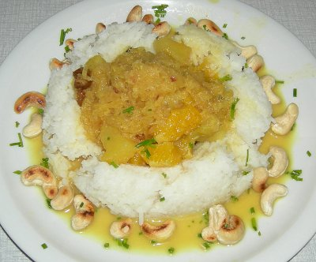

| Zutaten für 4 Personen: | |
| 200 g | Vollreis |
| einige Tropfen | Öl |
| Sauce: | |
| 5 g | Butter |
| 1 | Zwiebel |
| 2 El | Currypulver |
| 1 Tl | Mehl |
| 0.5 dl | Apfelwein ohne Alkohol oder Apfelsaft |
| 1 El | getrocknete Weinbeeren |
| 1 El | Kokosraspel |
| 2-3 dl | Gemüsebouillon |
| 3 El | Halbrahm |
| 2 | Äpfel |
| 1 | Orange |
| 1 | Kiwi |
| 1 | Banane |
| 1 El | Cashewkerne |
| Schnittlauch | |
Reis nach Anleitung oder mit Gemüsebouillon aufkochen und garen.
Einen Apfel raffeln. Zwiebel hacken. Beides in die Pfanne geben.
Mehl mit Curry mischen.
Fein gehackte Zwiebel und geraffelte Apfel in Butter dünsten, Curry und Mehl darüber streuen und mit Apfelwein ablöschen.
Weinbeeren, Kokosraspel und Bouillon beigeben, rund 15 Minuten köcheln lassen.
Cashewkerne ohne Fettzugabe rösten.
Rahm nach den 15 zum Curry dazugeben.
Früchte in mundgerechte Stücke schneiden und über Dampf oder in wenig Wasser erhitzen.
Ringform einölen, mit Reis füllen, gut andrücken und stürzen. Mit heissen Früchten und Currysauce füllen und mit Cashewkernen und Schnittlauch garnieren.
Brückenbauer, Wochenrezept
Recht gut. Die Orange war leicht sauer und hätte gut zuhanden der Banane reduziert werden können. RE,
6.1.2000
Am 26.12.2003 in Johannesburg gekocht: allgemeines Urteil gut. Sandra mag Früchte in Essen aber nicht
besonders.
Bei meinen Eltern zubereitet. Hatte (vom Induktionsherd gewohnt) Mühe mit den Kochzeiten und habe die
Früchte etwas zu stark gedämpft. Schmeckte dennoch ausgezeichnet. RE 14.12.2009